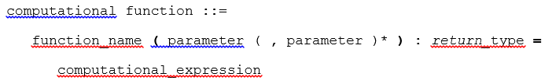
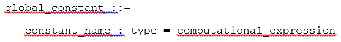
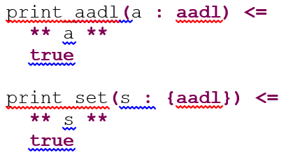

Resolute claim functions, computational functions, and global constants are defined in Resolute annex libraries, i.e., Resolute annex clauses placed directly in an AADL package.

A claim function can be associated with component types or implementations by prove statements declared in a Resolute annex subclause. The example shows the prove statement for a claim function SCSReq1 with the component itself passed in as a parameter.

Invoke the Resolute command on a component implementation. This results in an instantiation of the component implementation and the application of all claim functions associated with all of the components in the instance model via the prove statements.

The verification results are then displayed in a view labeled Assurance Case.

The syntax of a claim function is as follows:

The parameter declaration consists of a name and a type (see
The description for a claim function consists of a sequence of strings and references to claim function parameters, global constants, or local constants (defined by let statements). If your values are numerical with a unit, you can specify the unit to be used for display by indicating the desired unit after a %, e.g., WeightLimit%kg. The units are those defined by Units property types in property sets and do not have to be qualified by the Units type.
The claim function expression is assumed to be a logical expression (and, forall, or, exists, implies (=>)) to represent a predicate. In the case of and and forall, all expression elements are executed and then the result is evaluated and returns true only if all claim functions return true. Executing all claim functions allows Resolute to inform the user of all failing claim functions rather than one at a time by not executing the remaining elements in the and or forall expression.
A Resolute annex library is declared directly in a package through the annex Resolute {** <library content> **}; statement. Such a statement can be placed in a package by itself, combined with library declarations for other annexes, or combined with classifier declarations in the same package. A package cannot contain multiple Resolute annex library declarations; i.e., each library must be placed in a separate package.
Resolute assumes that there is a global name space for the names of claim functions and computational functions. Therefore, their names must be globally unique. They can be referenced in prove statements, other claim functions, or computational functions without qualification by a package name.
Claim functions are invoked on a component by specifying a prove statement in a Resolute annex subclause of the component implementation. This claim function is then executed on every instance of this component implementation when the Resolute command is invoked.
A component implementation can contain multiple prove statements.

The parameter values can be integers, real numbers, strings, Boolean literals, model elements, references to global constants, and collections of these types. They must match the specified type for the parameter.
One special model element reference is expressed by the keyword this. It refers to the instance model object of the model element that contains the prove statement. The keyword this can only be used in the prove statementnot in verification action expressions. This constraint means that this must be passed to a claim function for it to know what model element it operates onunless we have a global claim function (see
prove ( Memory_safe ( this ))
You can also identify a subcomponent of this; i.e., associate the verification action with a component down a path of the architecture hierarchy. This allows you to specify a verification action for a specific component instance. This example shows how a prove statement is applied to a subcomponent called subsystem1:
p>prove ( Fully_Connected ( this.subsystem1 ))The prove statement can be associated with the component classifier of the subcomponent. In that case, it applies to all instances of that component. We recommend that you associate prove statements with a path only if the prove is intended for that particular instance of a subcomponent.
The compiler does enforce that claim functions can be invoked only in prove statements, and as operands in and, or, => (implies), exists, and forall operations, and cannot be invoked in computational functions.
Computational functions are used to calculate a value of any type. The result can be Boolean, numeric, model elements, or collections of items of a specific type. Computational functions take parameters that are typed. Computational functions have a single expression that can be preceded by a local constant declaration.
Global constants represent parameters to the verification whose value is set once and can be used in any computational expression, including parameters to claim function calls. Global constants can also hold the result of a computational function or a set constructor whose value can be determined at startup time of a Resolute command. For example, a global constant may be used to precompute various sets of model element instances, e.g., all elements that are reachable from a component of a certain component type.
Resolute also supports precomputation of local constants, which are used inside a claim function or computational function. One or more local constants can be defined before any expression. Typically, they are used in a verification action or computational function before the logical or computational expression. However, they can also be used before any subexpression, e.g., before the right-hand subexpression of an and or + operator.

A constraint expression results in a Boolean value.
Predicate expressions support the following operators in increasing precedence order:
Computational expressions are used in computational functions and must return a value of the specified type. Computational expressions include constraint expressions, arithmetic expressions, and operations on collections of values and model elements.
Atomic expressions can be used as operands of all the operators listed above.
Exception operators are equivalent to exception throws with the enclosing claim function representing an implicit catch.

Note: The constants must have collections as their values, and the invoked function must return a collection. Function invocations returning a collection can be a user-defined computational function or a built-in function (see
The following examples illustrate the use of collections. The first example uses the built-in subcomponents function to get a collection of subcomponents. The forall then iterates over the collection and executes the built-in has_property constraint function on each element.
In the second example, we precompute the collection of subcomponents and hold on to them with a local constant. We then construct a collection of real values of value 1.0 for each subcomponent that satisfies the has_property constraint function, then perform the summation of the resulting real collection, and divide it by the size of the subcomponent collection.

Collections can also be precomputed in global constants. This is useful when you want to make use of certain collections of instance model objects repeatedly. In this example, the global constant declaration MOTORS represents the set of instances of a particular component type.
MOTORS : {component} = instances(PX4IOAR::Motor)
The fail expression can be used in any computational function and can be viewed like an exception that is thrown. It is automatically caught by the closest enclosing claim function, interpreted as a fail of the claim, and reported as a sub-result to the claim function. That is, the fail expression is shown as a failure, and the provided text explains the failure.

The collection concept allows multiple elements of the same value. In the SubcomponentWeightCoverage example, the collection concept has multiple instances of the value 1.0, and each is counted in the summation.
Base type:
int and real - as well as the min and max of a range - can be values specified with a measurement unit. Any of the unit literals defined in AADL2 Units property types are acceptable. The Units property type definition specifies the ratios to be used to perform conversion between the units. For int and real values with units, Resolute converts the value to a value relative to the base unit (the first unit defined in the Units type). All arithmetic is performed based on those values. To present results in the description of a claim function of a fail operation, the value is converted to the unit specified in the description specification.
Resolute can retrieve property values with built-in functions. The property values for aadlinteger are mapped into int, aadlreal into real, and range of into range.
AADL model element types have an implied type hierarchy. The nesting level indicates this type hierarchy.
Resolute operates on the instance model; i.e., the model elements represent instances. Built-in collection functions operate on instance model elements or retrieve the set of instances for a given classifier (see
union(collection, collection): collection - returns a collection that is the union of the two inputs
intersect(collection, collection): collection - returns a collection that is the intersection of the two inputs
length(collection): int - returns the size of the collection
member(element, collection): Boolean - returns true if the element is a member of the collection
sum(numeric_collection): numeric - calculates the sum of a collection of integers or a collection of real
upper_bound(range): numeric - returns the upper bound of the range
lower_bound(range): numeric - returns the lower bound of the range
has_property(named_element, property): Boolean - the named element has the property.
property(named_element, property, default value*): value - returns the value of the property. If a default value is supplied, then it is returned if the element does not have the property value. If no default is supplied and the value does not exist, a resolute failure exception is thrown.
has_parent(named_element): Boolean - returns true if the component has an enclosing model element
parent(named_element): named_element - returns the parent of the named element. The parent must exist.
name(named_element): string - returns the name of the named element
has_type (named_element): Boolean - returns true if the named element has a classifier. The named element can be a component, feature, or connection instance. In the case of a connection, the type of the feature is the connection end.
type(named_element): Classifier - returns the classifier of a component, feature, or connection. In the case of a connection, the type of the feature is the connection end. The named element must have a type.
is_of_type(named_element, classifier): Boolean - true if the named element has the classifier or one of its type extensions. The named element must have a type. The named element can be a component, feature, or connection instance. In the case of a connection, the type of the feature is the connection end.
has_member(component, string): Boolean - true if the component has a member with the specified name (string). Members are features, subcomponents, etc. The component can be a component instance or a component classifier.
source(connection): connection_endpoint - returns the component or feature instance that is the source of the connection instance
destination(connection): connection_endpoint - returns the component or feature instance that is the destination of the connection instance
direction(feature): string - returns the direction of a feature instance as string (in, out, inout/in_out?)
is_event_port(feature): Boolean - true if the feature instance is an event port
is_bound_to(component, binding_target): Boolean - true if the component instance is bound to the binding target
Resolute operates on the instance model; this means that the collections are of instance model elements.
features(named_element): {feature} - returns a collection containing the features of the named element
subcomponents(named_element): {component} - returns a collection containing the subcomponents (component instances) of the named element
connections(named_element): {connection} - returns a collection of connection instances for which the named element is an end point (source or destination). The named element can be a component instance or a feature instance.
instances (component_classifier): {component} - returns the collection of instances in the instance model for a given component classifier
instance (component_classifier): component - returns the component instance for a given component classifier. The method assumes that there is only one instance.
analysis (function: string, args): Boolean - invocation of a Java function registered as an external function extension point. The function is specified as string identifier of the extension point. The arguments are additional parameters of the analysis function.
propagate_error (named_element, error_type: string): Boolean - true if the component or feature instance propagates the error type
error_state_reachable (component, state: string): Boolean - true if the error state of the component instance is reachable
bound(component, binding_target): Boolean - true if the component instance is bound to the binding target by actual processor, memory, or connection binding. Note: bound is the same as the built-in is_bound_to function.
processor_bound(component, binding_target): Boolean - true if the component instance is bound to the binding target by actual processor binding
memory_bound(component, binding_target): Boolean - true if the component instance is bound to the binding target by actual memory binding
connection_bound(component, binding_target): Boolean - true if the component instance is bound to the binding target by actual connection binding.
source_component(connection): component - returns the component that is the source of the connection instance. This component contains the feature instance as a connection end point.
destination_component(connection): component - returns the component that is the destination of the connection instance. This component contains the feature instance as a connection end point.
is_port_connection(connection): Boolean - true if the connection is a connection between ports
is_data_port_connection(connection): Boolean - true if one of the connection end points is a data port. Note: should be determined by the destination.
is_event_port_connection(connection): Boolean - true if one of the connection end points is an event port. Note: should be determined by the destination.
is_event_data_port_connection(connection): Boolean - true if one of the connection end points is an event data port. Note: should be determined by the destination.
is_data_access_connection(connection): Boolean - true if one of the connection end points is a data access feature. Note: should be determined by the destination.
contained(named_element, container_component): Boolean - true if the named element is contained in the container component. The named element can be a component or feature instance. Note: also works for connection instance.
containing_component(named_element): component - returns the directly containing component instance. The named element can be a component or feature instance. Note: also works for connection instance.
Feature groups are represented in the instance model as a hierarchy of feature instances reflecting the nesting of the feature group.
flatten_feature(feature): { feature } - returns a set of feature instances that are the leaf elements of a given feature instance. If no elements are contained in the feature instance, the feature instance itself is returned as a set.
flatten_features( { feature } ): { feature } - returns a set of feature instances that are the leaf elements of a given feature instance set.
Get a model element trace in the assurance case view:
This is a snippet from the Smaccmcopter example on https://github.com/smaccm/smaccm/tree/master/models.

This material is based upon work funded and supported by the Department of Defense under Contract No. FA8721-05-C-0003 with Carnegie Mellon University for the operation of the Software Engineering Institute, a federally funded research and development center.
Any opinions, findings and conclusions or recommendations expressed in this material are those of the author(s) and do not necessarily reflect the views of the United States Department of Defense.
NO WARRANTY. THIS CARNEGIE MELLON UNIVERSITY AND SOFTWARE ENGINEERING INSTITUTE MATERIAL IS FURNISHED ON AN "AS-IS" BASIS. CARNEGIE MELLON UNIVERSITY MAKES NO WARRANTIES OF ANY KIND, EITHER EXPRESSED OR IMPLIED, AS TO ANY MATTER INCLUDING, BUT NOT LIMITED TO, WARRANTY OF FITNESS FOR PURPOSE OR MERCHANTABILITY, EXCLUSIVITY, OR RESULTS OBTAINED FROM USE OF THE MATERIAL. CARNEGIE MELLON UNIVERSITY DOES NOT MAKE ANY WARRANTY OF ANY KIND WITH RESPECT TO FREEDOM FROM PATENT, TRADEMARK, OR COPYRIGHT INFRINGEMENT.
This material has been approved for public release and unlimited distribution.
DM-0002203